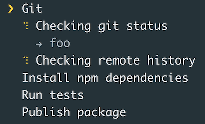

Beautify Input and Output
listr - terminal task list

- Effects
progressshow statusfigletASCII output
- Decoration
chalk, colorsfor colorscluioutput tables, status, chartscli-tableprint table data
- Utilities
clearclear terminaldebugwrap console log
oclif utilities for input & output
import cli from 'cli-ux'
cli.prompt('What is your password?', {type: 'mask'})
Features
url(), open()for urlsaction()immersive logstable(), tree()to print lists and structures
Make a command to list Github tasks

Use
@oclif/cli-ux or any other tools to
- show a spinner while loading information
- print the list
- colors for printing open & closed issues
npx oclif command manage:github:issues
note manage:github:issues
...Loading...
ID Title Description Status
---------------------------------------------------------------
31 New CLI Issue Sprint Task create Open
Change Command sprint change
by template
7 Sprint 7 Change In Progress
Configure an access
1. Create a Personal token
2. Add it to the config file .githubrc to variable GITHUB_PERSONAL_TOKEN
export GITHUB_PERSONAL_TOKEN=___TOKEN_GOES_HERE___
3. Export this variable to the current shell with source command
source config/.githubrc
4. Use the auth key with @octokit/rest5. Get the list of Github issues
Install NPM dependencies
npm i cli-ux chalk @octokit/rest
Write the code
1. Import cli from cli-ux to use advanced formatting
import cli from 'cli-ux'
2. Import chalk from chalk to use colors
import chalk from 'chalk'
3. Require the Octokit. This library is imported in a specific way
import Octokit = require('@octokit/rest')
4. Add a GITHUB_PERSONAL_TOKEN flag to flags definition so oclif will put the environment variable to a flag
githubPersonalToken: flags.string({
description: `Environment variable GITHUB_PERSONAL_TOKEN`,
env: 'GITHUB_PERSONAL_TOKEN',
required: true
})
5. Use cli.action.start to show the loader with some useful information what is happening
cli.action.start('Getting the list of the issues')
6. Create a new instance of Octokit with an object argument containing the "auth" property with the auth key created in the previous section
const octokit = new Octokit({
auth: flags.githubPersonalToken
})
7. Call the "issues.listForRepo" method with an object argument containing "owner" and "repo" keys. You can pass "korzio" as an owner and "note" as a repository. Documentation of the method https://octokit.github.io/rest.js/#octokit-routes-issues-list-for-repo.
The result of this method is an object containing "data" property
const { data: issues } = await octokit.issues.listForRepo({
owner: 'korzio',
repo: 'note',
})
8. Stop the loader with cli.action.stop
cli.action.stop()
9. Show tha table with the "data" as the first argument and the object with table description as the second. You can use columns "title", "assignee" with a getter to get deep property, "state" with a getter to color the resulting state, "html_url" with a different header
cli.table(issues, {
title: {
},
assignee: {
get: row => row.assignee ? row.assignee.login : null,
},
state: {
get: row => row.state === 'open' ? chalk.green('open') : chalk.red('closed'),
},
html_url: {
header: 'Link'
},
})